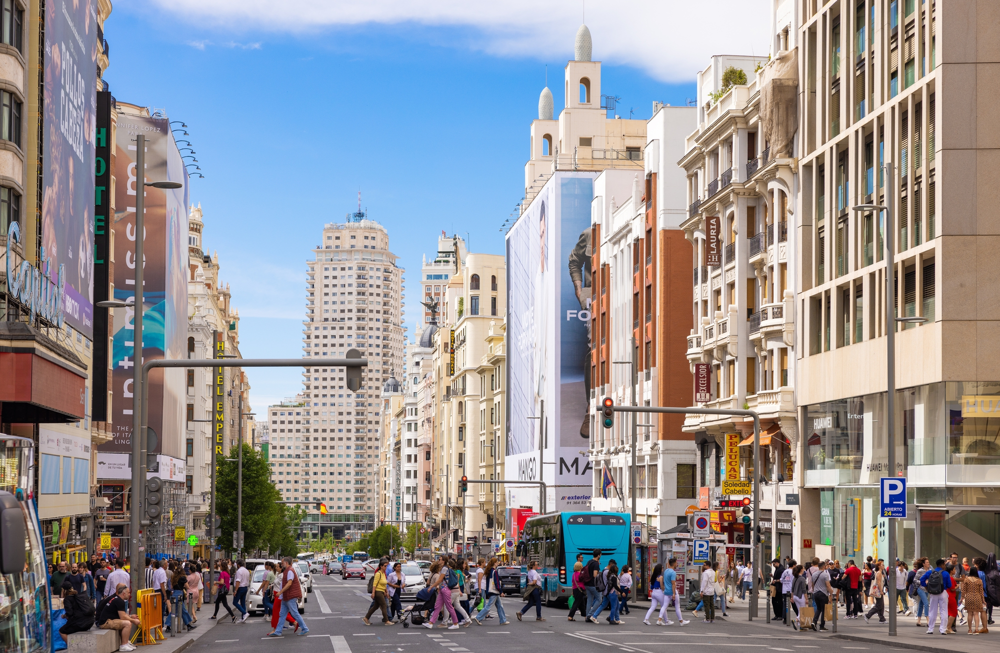
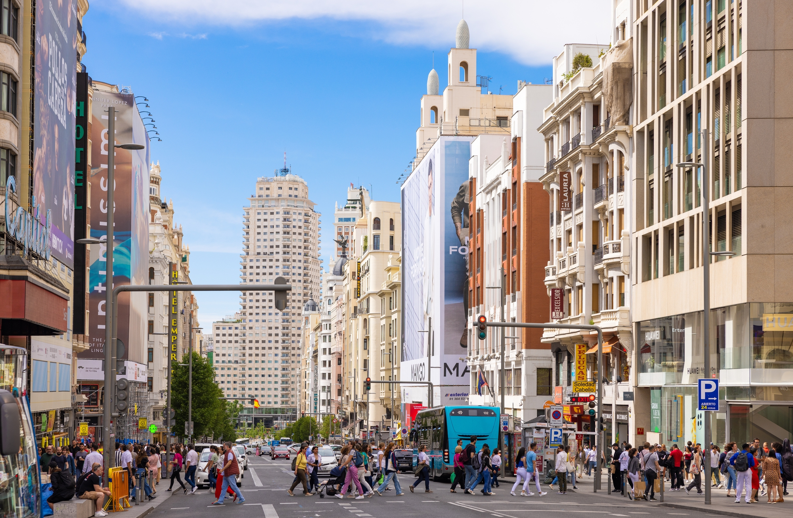
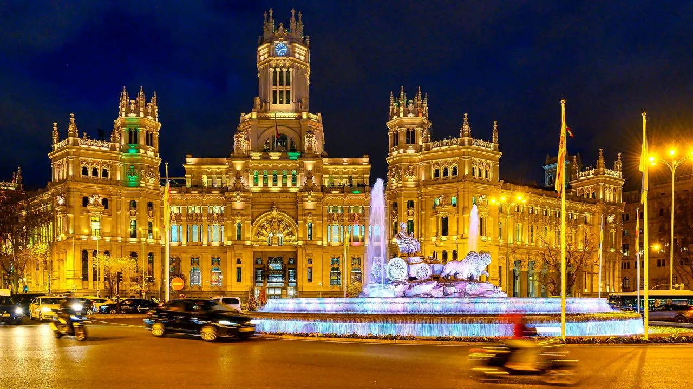
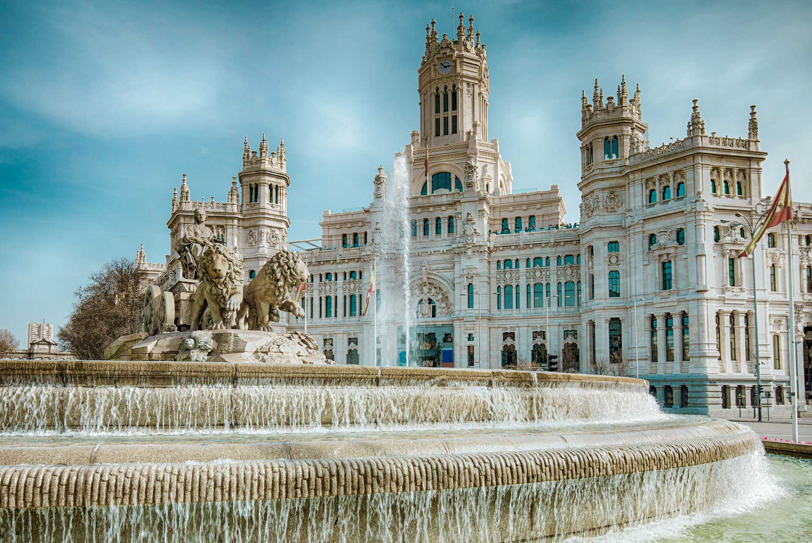
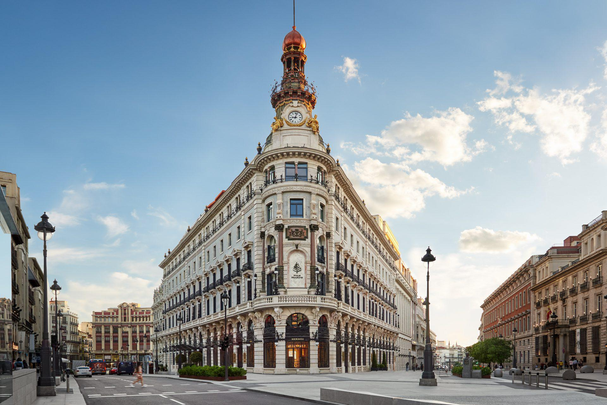

Stadsoverzicht: Madrid
Welkom in Madrid, de levendige hoofdstad van Spanje! Deze stad is het politieke, culturele en economische centrum van het land en biedt een rijke geschiedenis die teruggaat tot de Moorse tijd. Van het iconische Koninklijk Paleis tot het wereldberoemde Prado Museum, Madrid heeft voor ieder wat wils. Het is een stad waar moderne en historische elementen hand in hand gaan, en waar de Spaanse cultuur, kunst en gastronomie in al hun vormen worden gevierd.
Basisinformatie over Madrid
- Ligging: Gelegen in het centrum van Spanje, omgeven door bergen
- Bevolking: Ongeveer 3,2 miljoen inwoners (met de omliggende regio's meer dan 6 miljoen)
- Oprichting: Madrid werd in de 9e eeuw gesticht door de Moren
- Klimaat: Mediterraan klimaat met hete zomers en milde winters
- Bekende wijken: Gran Vía, Malasaña, El Rastro, Chueca
Bezienswaardigheden in Madrid
Madrid heeft een indrukwekkende lijst van historische en culturele bezienswaardigheden die bezoekers van over de hele wereld aantrekken. Hier zijn enkele van de topattracties die je niet mag missen:
- Palacio Real – Het Koninklijk Paleis is een van de grootste paleizen van Europa, met een rijke geschiedenis en prachtige tuinen.
- Prado Museum – Dit wereldberoemde museum herbergt meesterwerken van kunstenaars zoals Goya, Velázquez en El Greco.
- Plaza Mayor – Dit iconische plein in het hart van de stad is een must-see voor elke bezoeker.
- Parque del Retiro – Een van de mooiste parken van Madrid, ideaal voor een rustige wandeling of een boottocht op het meer.
- Puerta del Sol – Het centrum van Madrid, een belangrijk plein dat vaak wordt geassocieerd met het beginpunt van alle Spaanse wegen.
 


Lokale Activiteiten en Ervaringen
Madrid biedt een scala aan activiteiten die het authentieke Spaanse leven weerspiegelen. Of je nu van kunst, koken of sport houdt, hier zijn enkele geweldige dingen om te doen:
1. Geniet van een Flamenco-show
Flamenco is meer dan alleen muziek en dans; het is een levendige uitdrukking van de Spaanse cultuur. In Madrid zijn er verschillende locaties waar je een betoverende flamenco-show kunt bijwonen. Dit is een must voor iedereen die de passie en intensiteit van de Spaanse cultuur wil ervaren.
2. Tapas Tour
Spanje staat bekend om zijn tapas, kleine hapjes die perfect zijn voor het proeven van verschillende gerechten. In Madrid kun je een tapas tour maken langs de leukste bars en restaurants in de stad, van traditionele gerechten zoals jamón ibérico tot innovatieve moderne tapas.
3. Fietstour door Madrid
Voor de avontuurlijke reiziger biedt Madrid een geweldige fietstour. Verken de stad op een unieke manier en ontdek de mooiste plekken, van het historische centrum tot de iconische parken.

4. Bezoek het Santiago Bernabéu Stadion
Voetballiefhebbers moeten absoluut het stadion van Real Madrid bezoeken, het legendarische Santiago Bernabéu. Dit stadion biedt rondleidingen waar je de kleedkamers, het veld en de indrukwekkende trofeeën van de club kunt zien.
Winkelen en Nachtleven in Madrid
Madrid is ook beroemd om zijn bruisende nachtleven en uitstekende winkelmogelijkheden:
Winkelen op Gran Vía
Gran Vía is de belangrijkste winkelstraat van Madrid en is ideaal voor het kopen van mode, van high-end merken tot trendy boetieks. Het is ook een geweldige plek voor entertainment, met tal van theaters en bioscopen.
Uitgaan in Madrid
Als de zon ondergaat, komt Madrid tot leven. Van chique rooftopbars tot de levendige clubs van de Malasaña wijk, het nachtleven van Madrid biedt voor ieder wat wils.